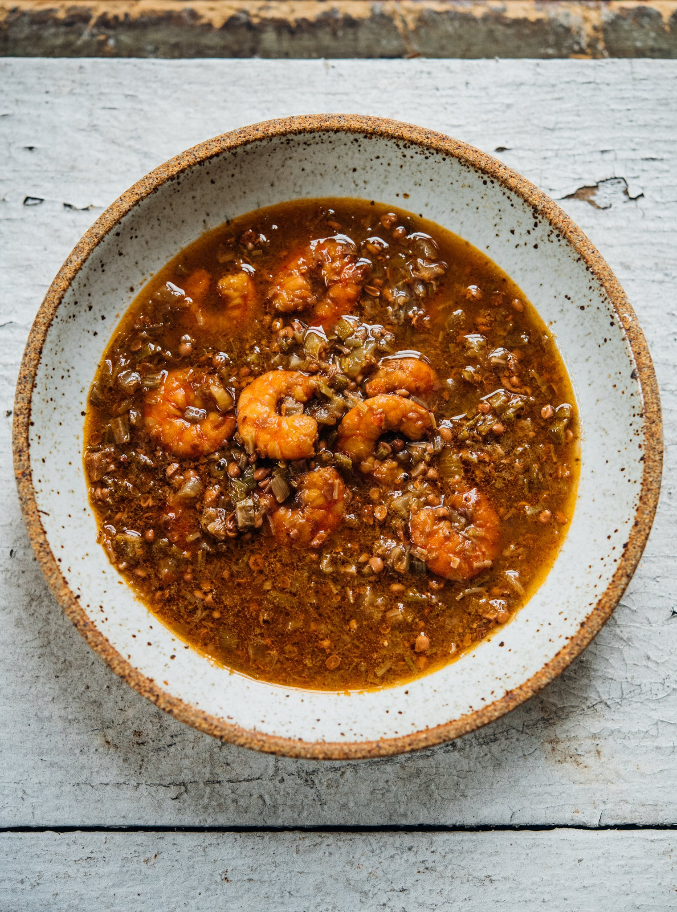

Chichen and Okra Gumbo

Ingredients
- 2 Cups Stewed Okra
- 1 Stick Butter
- 1 lb Shrimp
- 2 Cups Seafood Stock
- 1 lb Celery
- 3 lbs Diced Onions
- 1 lb Diced Green Bell Pepper
- 2 Bay Leaves
- 2 Cups Cooked Rice
- Garnish Green Onion
Method
- Dice Onions, Bell Pepper, and Celery
- Melt Butter Sautee Onions for an hour or two
- Add Seafood Stock and Simmer for an hour
- Add Stewed Okra
- Add Shrimp
- Put gumbo on rice or potato salad garnish with Green Onions